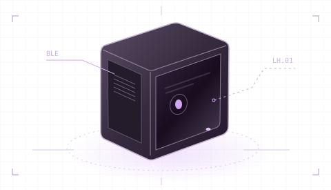

Busca una estación
Abre la herramienta con un adaptador Bluetooth LE activo. La búsqueda muestra nombre, estado, canal y señal de las estaciones cercanas.
Selecciona tus estaciones Lighthouse y enciéndelas o ponlas en espera o suspensión por Bluetooth LE. Si quieres, puedes hacer que se enciendan al iniciar SteamVR.

Abre la herramienta con un adaptador Bluetooth LE activo. La búsqueda muestra nombre, estado, canal y señal de las estaciones cercanas.
Marca varias estaciones para encenderlas o ponerlas en espera o suspensión. La confirmación muestra los destinos. Para una estación también puedes asignar un nombre local o exportar el diagnóstico.
En Configuración, activa el inicio con SteamVR y el encendido de las estaciones al iniciar SteamVR. Así SteamVR puede abrir la herramienta y despertar las estaciones conocidas. Para el final de la sesión puedes elegir espera o suspensión.
Instalador para el usuario actual con acceso en el menú Inicio.
Descargar · MSI ↓Ejecuta el archivo de Windows x64 directamente, sin instalarlo.
Descargar · EXE ↓Instalación con el gestor de paquetes de Debian o Ubuntu.
Descargar · DEB ↓Ejecutable portátil de Linux. No requiere instalación.
Descargar · AppImage ↓Haz doble clic en el MSI descargado y abre «Basestation Tool» desde el menú Inicio. El instalador no tiene firma digital.
Guarda el EXE en una carpeta permanente y haz doble clic. Si luego lo mueves, vuelve a registrar el inicio con SteamVR.
Abre un terminal en la carpeta de descargas. Instala el paquete y abre la herramienta como usuario normal:
sudo apt install ./basestation-tool_0.1.0_amd64.deb
basestation-toolGuarda el archivo en una ubicación permanente y ejecuta estos comandos allí:
chmod +x Basestation-Tool-0.1.0-x86_64.AppImage
./Basestation-Tool-0.1.0-x86_64.AppImageSin FUSE:
./Basestation-Tool-0.1.0-x86_64.AppImage --appimage-extract-and-runSe requiere un adaptador Bluetooth LE y una estación Lighthouse compatible con el perfil LHB. El control se probó con tres estaciones reales en Windows. Los paquetes Linux se han compilado y verificado, pero aún no se han probado la interfaz ni Bluetooth en Linux. Linux requiere sesión gráfica, glibc 2.31 o posterior, BlueZ y acceso al D-Bus del sistema.
Comprueba que el PC sea compatible con Bluetooth Low Energy (BLE) y que Bluetooth esté activado. Bluetooth clásico por sí solo no basta. Si falta BLE, usa un adaptador USB compatible. Conecta la estación a la corriente, acércala y repite la búsqueda. En Linux, BlueZ también debe estar activo.
Inicia SteamVR y activa el inicio con SteamVR en la herramienta. Comprueba que Basestation Tool esté habilitada entre las aplicaciones de inicio de SteamVR. Si moviste el EXE o el AppImage, vuelve a registrarlo desde su nueva ubicación.
El inicio automático solo abre la aplicación. Activa también el encendido de las estaciones al iniciar SteamVR. Prueba primero la conexión Bluetooth buscando y encendiendo manualmente una estación.